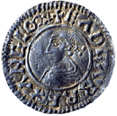
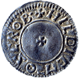

You can click on the coin to show up the Latin words.
TRANSLATION
OBVERSE
REVERSE
explore further ...
The history of this coin
Silver penny of Edgar, king of England, Around AD 973-5
From the time of Edgar (959-975) England was united under one king. Around 973 Edgar introduced a national coinage to reflect the new unity. All coins were made to a single pattern, although each coin carried the name of the town where it was made.
The design on the coins was changed regularly, and people had to pay to exchange old coins for the new ones. However, the basic pattern of English coinage did not change until the late 12th century.
Edgar's Reform
Changing types


These words tell us about the King and about the man who made the coin.
+ - Initial Cross
EADGAR - Edgar
REX - King
ANGLORUM - Of the English
With a Reform Portrait
+ - Initial Cross
HILDIC - Name of Moneyer
M - O - Moneyer At
SCROB - Shrewsbury, name of mint
With a Small Cross
CM 1915.5-7.850, 21mm
Around 973, Edgar introduced a standard coin type which was produced across the whole of England. The front showed a bust of the king with the legend 'Edgar, King of the English' in Latin round the edge.
The back showed a small cross, and around the edge the name of the moneyer responsible for producing the coin and the mint where it was made. Coins were only produced in towns by command of the king, and there were heavy penalties for producing coins without royal authority.
Edgar's successors kept a national coinage, but changed the type, or design every few years. Most types showed a royal bust (copied from Roman coin designs) on the front, and some sort of cross on the back.
As each new type was issued, the previous type ceased to be legal tender, and people had to exchange their old coins for the new ones. They had to pay a commission to do so, and the profit was shared between the moneyers who exchanged the coins and the king.